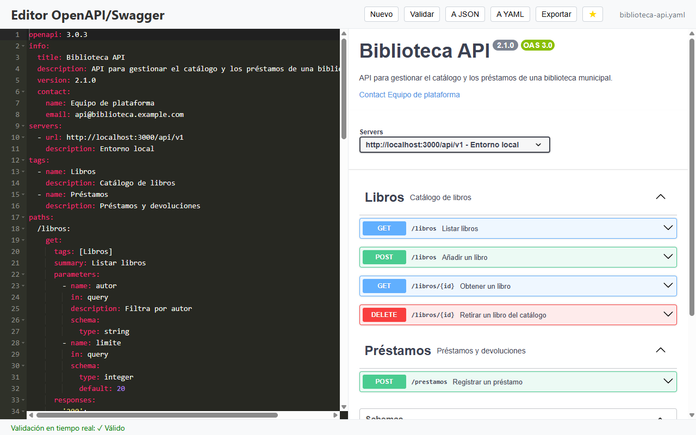

Editor de código
Editor ACE con resaltado de YAML y JSON, números de línea, plegado de bloques y autocompletado con las palabras del documento.
Código abierto · MIT · v1.0.0
Edita especificaciones OpenAPI en YAML o JSON con la documentación de Swagger UI actualizándose a tu lado, detecta los errores mientras escribes y prueba los endpoints sin pelearte con CORS.

Abre un .yaml, .yml o .json, o parte de la plantilla OpenAPI 3.0
que trae el botón Nuevo.
La vista previa de Swagger UI se actualiza al dejar de escribir y los errores de sintaxis se marcan en la línea correspondiente.
Lanza peticiones con Try it out y exporta la especificación a YAML, JSON o una página HTML con la documentación.
Instaladores para Windows, macOS y Linux. Sin cuentas ni registro: todo se edita en local.
Proyecto personal e independiente: no está afiliado a SmartBear ni es el Swagger Editor oficial. «Swagger» es una marca de SmartBear Software.
Todo lo necesario para escribir una especificación OpenAPI en una sola ventana: editor, documentación y cliente para probar los endpoints.
Editor ACE con resaltado de YAML y JSON, números de línea, plegado de bloques y autocompletado con las palabras del documento.
Swagger UI muestra la documentación medio segundo después de dejar de escribir. Admite OpenAPI 3.0, 3.1 y Swagger 2.0.
Los errores de sintaxis YAML/JSON se resaltan en su línea y la barra de estado indica si el documento es válido.
Try it out envía las peticiones a través de un proxy local, así que las APIs sin cabeceras CORS también responden.
Convierte el documento de un formato a otro con un clic, sin perder la estructura.
Guarda la especificación como YAML o JSON, o genera una página HTML con la documentación de Swagger UI.
Marca tus APIs con la estrella y vuelve a los últimos 10 archivos desde el menú Archivo.
Cada 10 minutos guarda el archivo abierto; si el documento aún no tiene nombre, ofrece recuperarlo en el siguiente arranque.
| Acción | Windows / Linux | macOS |
|---|---|---|
| Nuevo documento | Ctrl+N |
⌘N |
| Abrir | Ctrl+O |
⌘O |
| Guardar | Ctrl+S |
⌘S |
| Guardar como | Ctrl+Shift+S |
⌘⇧S |
| Salir | Ctrl+Q |
⌘Q |
Capturas reales de la aplicación editando una especificación de ejemplo («Biblioteca API») con varios endpoints, esquemas y un servidor local. Haz clic para ampliar.
Última versión: v1.0.0
Instalador .exe · 64 bits
~122 MB
Imagen .dmg · Apple Silicon
~125 MB
Ejecutable .AppImage · 64 bits
Desde GitHub Releases
¿Prefieres ver todos los archivos? Todas las versiones en GitHub.
SmartScreen puede avisar de que el editor es desconocido porque el instalador no está firmado. Pulsa Más información → Ejecutar de todas formas.
Si Gatekeeper bloquea la app, ábrela con clic derecho → Abrir, o ejecuta
xattr -cr "/Applications/Swagger Editor.app".
Dale permisos de ejecución al AppImage:
chmod +x Swagger-Editor-*.AppImage y lánzalo con doble clic.
git clone https://github.com/cmurestudillos/openapi-swagger.git
cd openapi-swagger
pnpm install
pnpm start # ejecutar en desarrollo
pnpm package:win # generar instalador de Windows
pnpm package:mac # generar imagen de macOS
pnpm package:linux # generar AppImage
Requisitos: Node.js 22.12+ y pnpm 11+. Los instaladores se generan en release/.
Archivo → Abrir acepta .yaml, .yml y .json. El
botón Nuevo carga una plantilla OpenAPI 3.0 con un endpoint de ejemplo. La cabecera
muestra el nombre del archivo; pasa el ratón por encima para ver la ruta completa.
Al dejar de escribir, la documentación de la derecha se regenera con Swagger UI. Al abrir un archivo, el editor detecta si es JSON o YAML y ajusta el resaltado.
Dos segundos después de cada cambio se comprueba el documento: si hay un error de sintaxis, su línea se marca en rojo y la barra de estado muestra el motivo. El botón Validar (o OpenAPI → Validar) hace la misma comprobación y muestra el error en un diálogo.
Despliega una operación en la vista previa, pulsa Try it out y luego Execute. La
petición se envía a la URL de servers a través de un proxy local que solo atiende a la propia
app, de modo que funciona aunque la API no devuelva cabeceras CORS.
A JSON y A YAML convierten el documento.
Guardar escribe el archivo abierto (o pide un nombre si es nuevo) y
Exportar genera un .yaml, un .json o una página
.html con la documentación, sin cambiar el archivo en el que estás trabajando.
La estrella ★ añade el archivo abierto a Archivo → Favoritos, y Archivo → Archivos recientes guarda los 10 últimos. Cada 10 minutos se guarda el archivo abierto; si el documento es nuevo, se guarda una copia temporal que la app ofrece recuperar al arrancar.
openapi/swagger, info y paths, pero no valida los
esquemas ni resuelve las $ref.
.json a
partir de YAML, convierte antes con A JSON o usa Exportar.
├── main.js # proceso principal: ventana, menús, diálogos, IPC y configuración
├── preload.js # puente IPC seguro (contextIsolation activo)
├── renderer.js # interfaz: editor ACE, Swagger UI, validación y autoguardado
├── proxy-server.js # proxy CORS local (Express, solo 127.0.0.1 y con token)
├── swagger-parser-loader.js # validación básica de la especificación
├── index.html · style.css # estructura y estilos de la ventana
└── assets/ # iconos de la appConstruida con Electron, ACE como editor, Swagger UI para la vista previa, js-yaml para las conversiones y Express para el proxy. Sin frameworks de interfaz: HTML, CSS y JavaScript.
$ref) con
swagger-parser
Los issues y pull requests son bienvenidos. Abre un issue describiendo el bug (si puedes, adjunta una especificación mínima que lo reproduzca) o la funcionalidad que echas de menos.